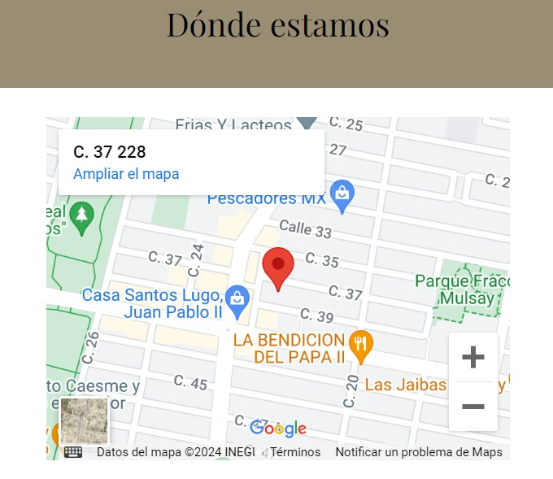

¿Quines somos? | |
|
|
 Rico café no solo es una cafetería convencional,
Rico café no solo es una cafetería convencional, si no que también es un lugar perfecto para leer y reír. Un sitio donde convergen los eventos espontáneos y las charlas con un buen café. Todos estos espacios combinan el amor por los libros y el café de calidad. Rico café ofrece un ambiente acogedor para disfrutar de aperitivos y comidas rápidas, como platos combinados, bocadillos y repostería. Es un lugar ideal para tomar un café o refresco mientras se socializa o se trabaja de forma relajada.  regresar |